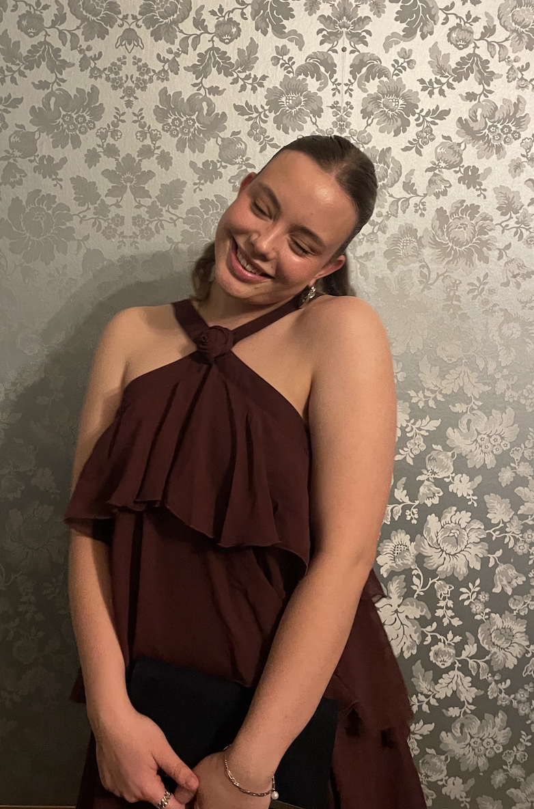

About Me
My name is Emelie Kryger, and I am a 19-year-old design and web development student at Jönköping University. I enjoy creating visually appealing and user-friendly digital experiences, constantly learning new technologies to enhance my skills. If you or your company need help with your visual identity don't hesitate to reach out.